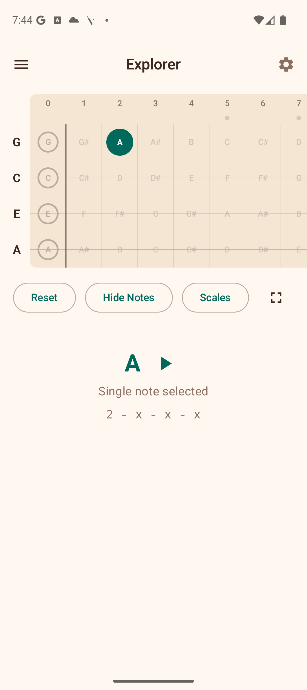

Patterns
The Patterns section provides a reference guide for strumming and fingerpicking patterns. Use the toggle chips at the top to switch between the two views.
Strumming Patterns

The Strumming tab shows a list of preset strumming patterns, from beginner to intermediate. Each pattern card includes:
- Name — e.g., "Island Strum", "Calypso", "Ska Upstroke".
- Difficulty badge — Beginner or Intermediate.
- Visual beat arrows — down arrows, up arrows, and miss/pause indicators showing the rhythmic pattern.
- Notation — a text representation of the pattern (e.g., "D DU UDU").
- Description — a brief explanation of the pattern and when to use it.
- Suggested tempo — a BPM range for practicing the pattern.
Creating Custom Patterns
Tap the + button (floating action button) in the bottom-right corner to create your own strumming pattern:
- Enter a pattern name.
- Tap each beat slot to cycle through directions: Down, Up, Miss, and Pause.
- Tap the accent row below to toggle emphasis on individual beats (accented beats are shown louder/bolder).
- Tap Save to add it to your custom patterns.
Your custom patterns appear in a "My Patterns" section at the top of the list. Each custom pattern has a delete button to remove it.
Fingerpicking Patterns

The Fingerpicking tab shows reference patterns for fingerstyle playing. Each card includes:
- Name — e.g., the pattern name and style.
- Difficulty badge — similar to strumming patterns.
- Finger step display — color-coded indicators showing which finger (Thumb, Index, Middle, Ring) plucks which string at each step.
- Notation — a text representation of the fingerpicking sequence.
- Description — guidance on technique and musical context.
- Suggested tempo — a BPM range for practice.
The finger indicators use distinct colors for each finger, making it easy to follow the picking pattern visually. Emphasized steps are shown in a bolder weight.
Tips
- Start with the beginner patterns and work your way up.
- Use the suggested BPM ranges as a guide — start slower and increase tempo as you get comfortable.
- Create custom strumming patterns to save patterns you learn from songs or teachers.